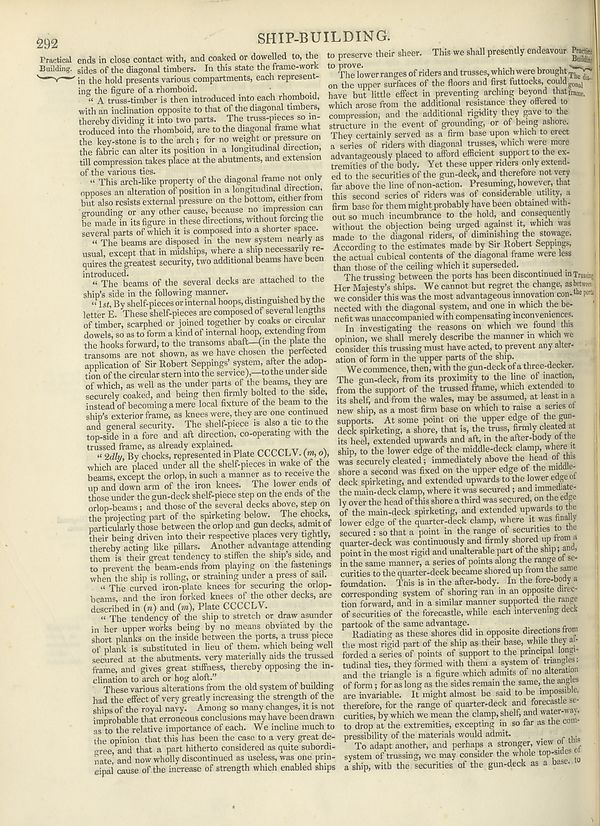

Scan ID britannica:309f765b1ecc83e0a7f7762e44b4a927a7555443:train:13
Image SHA-256 50049db49e8b83dc59735eae8cc35e6df733062d4bcb07c5cb4663d51cade012
Status: ok. Running header: 292 SHIP-BUILDING. (article_title). Removed page furniture: Page-header: 292 SHIP-BUILDING..
PDF · raw Parse reply · LaTeX
Entries: SHIP BUILDING

| # | Class | Box | Parse 3.5 | Used text | Source |
|---|---|---|---|---|---|
| 1 | Section-header | [0.0615, 0.0648, 0.126, 0.1117] | Fractical Building | Practical Building. | super_vl |
| 2 | Text | [0.1182, 0.057, 0.5244, 0.1172] | ends in close contact with, and cooked or dowelled to, the sides of the diagonal timbers. In this state the frame--on in the hold presents various compartments, each representing the figure of a method. | ends in close contact with, and cooked or dowelled to, the sides of the diagonal timbers. In this state the frame-work in the hold presents various compartments, each representing the figure of a rhomboid. A truss-timber is then introduced into each rhomboid, | super_vl |
| 3 | Text | [0.1172, 0.1109, 0.5391, 0.2141] | A T reads—timber is then introduced into each rhombed, with an inclination opposite to that of the diagonal timbers, thereby dividing it into two parts. The trust--pieces so in- tended into one rhombed, are to the diagonal frames where the key-stone is to the arch; for no weight or pressure on the fabric can alter its position in a longitudinal direction till compression takes place at the autumn, and extension of the various ties. | ing the figure of a rhomboid. "A truss-timber is then introduced into each rhomboid, with an inclination opposite to that of the diagonal timbers, thereby dividing it into two parts. The truss-pieces so in- troduced into the rhomboid, are to the diagonal frame what the key-stone is to the arch; for no weight or pressure on the fabric can alter its position in a longitudinal direction, till compression takes place at the abutments, and extension of the various ties. | super_vl |
| 4 | Text | [0.1191, 0.2094, 0.54, 0.2875] | "This arch-like property of the diagonal frame not only opposes an alteration of position in a longitudinal direction, but also restate external pressure on the bottom, either from grounding or any other cause, because so impression can be made in its figure in these directions, without forcing the several parts of which it is composed into a shorter space. | This arch-like property of the diagonal frame not only opposes an alteration of position in a longitudinal direction, but also resists external pressure on the bottom, either from grounding or any other cause, because no impression can be made in its figure in these directions, without forcing the several parts of which it is composed into a shorter space. | super_vl |
| 5 | Text | [0.1201, 0.2836, 0.541, 0.3367] | The beams are discussed in the system nearly as we usual, except that in buildings, where a ship necessarily re-quires the greatest security, two additional beams have been introduced. | several parts of which it is composed into a shorter space. "The beams are disposed in the new system nearly as usual, except that in midships, where a ship necessarily re- quires the greatest security, two additional beams have been introduced. The beams of the several decks are attached to the | super_vl · expanded_beyond_parse |
| 6 | List-item | [0.1367, 0.3328, 0.542, 0.3617] | • The beams of the several decks are attached to the shiny’s side in the following manner. | introduced. "The beams of the several decks are attached to the ship's side in the following manner. | super_vl |
| 7 | List-item | [0.1348, 0.3586, 0.5605, 0.5461] | 1 Lc by And of pieces internal hoops, distinguished by the letter 2. These shelf-pieces are composed of several lengths of timber, scarded or joined together by coaks or circular downs, so as to form a full of internal hoop, extending from the hooks forward, to the transons shall --(in the plate the transons are not shown), we have chosen the perfected application of Sir Robert Seapings’ system, after the adoption of the circular stem into the service, —to the under side of which, as well as the whole part of the beams, they are securely cookies, and being then firmly bolted to the side, inste | 1st. By shelf-pieces or internal hoops, distinguished by the letter E. These shelf-pieces are composed of several lengths of timber, scarped or joined together by coaks or circular dowels, so as to form a kind of internal hoop, extending from the hooks forward, to the transoms abaft—(in the plate the transoms are not shown, as we have chosen the perfected application of Sir Robert Seppings' system, after the adoption of the circular stern into the service),—to the under side of which, as well as the under parts of the beams, they are securely coaked, and being then firmly bolted to the side, i | super_vl |
| 8 | List-item | [0.1377, 0.5453, 0.5615, 0.7016] | 2 Idly. By chocks, represented in Plate CCCCLV. (m.,) which are placed under all the shelf-pieces in walls of the beams, except the drop in such a manner as to receive the up and down arm of the iron knes. The lower ends of those under the span-deck-pipe step on the ends of the otp-bears; and those of the several decks above, step on the projecting part of the splashing beams. The chosen between the they and gun docks, and of their being driven into their respective places very tightly, thereby eating the pillars. Another advantage attending them is the great tendency to stiffen the shiny side | 2dly, By chocks, represented in Plate CCCCLV. (m., o,) which are placed under all the shelf-pieces in wake of the beams, except the orlop, in such a manner as to receive the up and down arm of the iron knees. The lower ends of those under the gun-deck shelf-piece step on the ends of the orlop-beams; and those of the several decks above, step on the projecting part of the spirketing below. The chocks, particularly those between the orlop and gun decks, admit of their being driven into their respective places very tightly, thereby acting like pillars. Another advantage attending them is their gr | super_vl |
| 9 | Text | [0.1309, 0.7008, 0.5625, 0.743] | "The current non-plate knees for securing the otlop-beans, and the iron frontal knees of the other decks, are described in (a) and (a). Place CCCCLV. | The curved iron-plate knees for securing the orlop-beams, and the iron forked knees of the other decks, are described in (n) and (m), Plate CCCCLV. | super_vl |
| 10 | Text | [0.1494, 0.7359, 0.5596, 0.8289] | "The tendency of the ship to stretch or draw sammber in her upper works being by our means advised by the short plank out the inside between the ports, a true piece of plank is substituted in lieu of them,which being well secured, at the altumants, very materially and the trussal frame, and gives great artifacts, thereby opposing the in-clination to arch or log, add." | described in (n) and (m), Plate CCCCLV. "The tendency of the ship to stretch or draw asunder in her upper works being by no means obviated by the short planks on the inside between the ports, a truss piece of plank is substituted in lieu of them, which being well secured at the abutments, very materially aids the trussed frame, and gives great stiffness, thereby opposing the in- clination to arch or hog aloft." | super_vl |
| 11 | Text | [0.1504, 0.8234, 0.5586, 0.9414] | These various alterations from the old system of building had the effect of very greatly increasing the strength of the ship of the boys'l away. Among us many changes, it is not impossible that continuous conclusions may have been drawn as to the relative importance of each. We include much the opinion that this has been the case a very good de-gree, and that is part hitherto considered as quite authori- nate, and now wholly discontinued as useless, was one priin- cipal cause of the increase of strength which enabled ships | These various alterations from the old system of building had the effect of very greatly increasing the strength of the ships of the royal navy. Among so many changes, it is not improbable that erroneous conclusions may have been drawn as to the relative importance of each. We incline much to the opinion that this has been the case to a very great degree, and that a part hitherto considered as quite subordinate, and now wholly discontinued as useless, was one principal cause of the increase of strength which enabled ships | super_vl |
| 12 | Text | [0.5439, 0.0539, 0.9561, 0.0852] | to preserve their sheet. This we shall presently endeavour to prove. | to preserve their sheet. This we shall presently endeavour to prove. | super_vl |
| 13 | Text | [0.5459, 0.0789, 0.957, 0.3289] | The lower ranges of riders and trusses, which were brought on the upper surfaces of the floors and the fututets, could have had little effect in preventing nothing beyond that there, which sense from the additional resistance they offered to compression, and the additional rigidity they pose to the structure in the event of groundning, or of being adore. They certainly served as a firm base upon which to erect a series of riders with diagonally, trusses, which were more advantageous by placed to afford efficient support to the ex tremities of the body. Yet the upper riders only seemed to the c | The lower ranges of riders and trusses, which were brought on the upper surfaces of the floors and first futtocks, could have but little effect in preventing arching beyond that which arose from the additional resistance they offered to compression, and the additional rigidity they gave to the structure in the event of grounding, or of being ashore. They certainly served as a firm base upon which to erect a series of riders with diagonal trusses, which were more advantageously placed to afford efficient support to the extremities of the body. Yet these upper riders only extended to the securit | super_vl |
| 14 | Text | [0.5469, 0.3273, 0.959, 0.3906] | The trusing between the ports has been discontinued in France. He Majesty's ship. We cannot but regret the change, as hetwe would this was the most advantageous innovation con-ship needed with the diagonal system, and one in which the ke-di was uncomfortable with compensating inconveniences. | The trussing between the ports has been discontinued in Her Majesty's ships. We cannot but regret the change, as we consider this was the most advantageous innovation connected with the diagonal system, and one in which the benefit was unaccompanied with compensating inconveniences. | super_vl |
| 15 | Text | [0.5488, 0.3852, 0.96, 0.4414] | In investigating the reasons on which we found this opinion, we shall every describe the manner in which we consider this trussing must have acted, to prevent any alteration of form in the upper parts of the ship. | In investigating the reasons on which we found this opinion, we shall merely describe the manner in which we consider this trussing must have acted, to prevent any alteration of form in the upper parts of the ship. | super_vl |
| 16 | Text | [0.5479, 0.4359, 0.9609, 0.7641] | We concern when, with the gun-dedic of a three-decker. The gun-deck, from its proximity to the line of inaction, from the support of the trussed frame, which extended to the shell and from the walks, may be assumed, at least in a new ship, as a most firm base on which to raise a series of supports. At some point on the upper edge of the greck skpirishing a, above, that is, the truss, firmly closed at its heel, extended upwards and at, in the after-body of the ship, to the lower edge of the middle-dock clamp, where it was secured (denoted), immediately above the head of this shore a second was | We commence, then, with the gun-deck of a three-decker. The gun-deck, from its proximity to the line of inaction, from the support of the trussed frame, which extended to the shell, and from the wales, may be assumed, at least in a new ship, as a most firm base on which to raise a series of supports. At some point on the upper edge of the gun-deck spirketing, a shore, that is, the truss, firmly cleated at its heel, extended upwards and aft, in the after-body of the ship, to the lower edge of the middle-deck clamp, where it was securely cleated; immediately above the head of this shore a second | super_vl |
| 17 | Text | [0.5664, 0.7578, 0.9619, 0.8977] | Radizing as these stores did in opposite direction from the most rigid part of the ship as their lines, they play-fished a setter of points of support to the principal long- undained ties, they formed with them a system of timeless and the triangular is a figure which admits of no an element of form for at longing as his sides remain the same; the angles are invariable. It might almost be called to impomphether, for the range of quarters-deck and forecast se- cortiles, by which we mean the clamp, shelf, and water-way, to drop at the extremities excepting to so far as the compressibility of the | partook of the same advantage. Radiating as these shores did in opposite directions from the most rigid part of the ship as their base, while they as- forded a series of points of support to the principal longi- tudinal ties, they formed with them a system of triangles: and the triangle is a figure which admits of no alteration of form; for as long as the sides remain the same, the angles are invariable. It might almost be said to be impossible, therefore, for the range of quarter-deck and forecastle se- curities, by which we mean the clamp, shelf, and water-way, to drop at the extremities, ex | super_vl |
| 18 | Text | [0.5674, 0.8922, 0.9727, 0.9352] | To adapt another, and perhaps a stronger, view of this system of trussing, we may consider the whole top-side of a ship, with the securities of the gun-deck as a base: to | To adapt another, and perhaps a stronger, view of this system of trussing, we may consider the whole top-sides of a ship, with the securities of the gun-deck as a base, to | super_vl |
Britannica scans: National Library of Scotland, CC0 1.0. Wikipedia text: Wikipedia contributors, CC BY-SA 4.0, revision links on each page. Generated 2026-10-18T13:26:14+00:00.